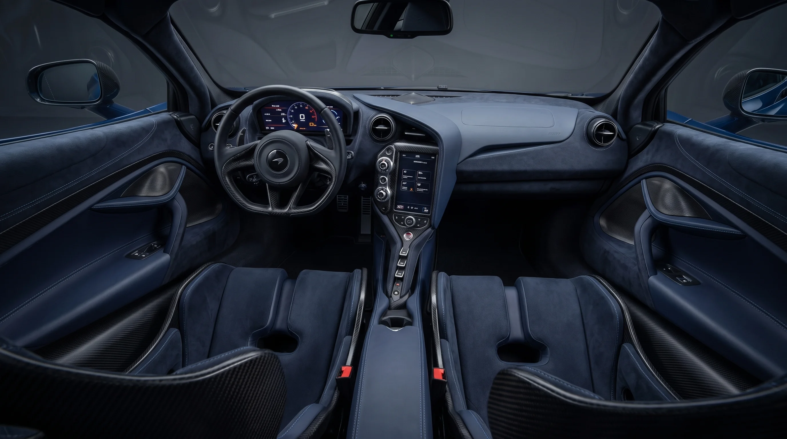
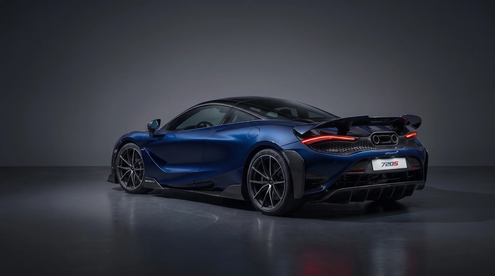

Projetado em torno do condutor, o interior do McLaren 720S elimina qualquer distração visual. A estrutura em fibra de carbono integral permite colunas ultrafinas com visibilidade de 360° em formato de gota, enquanto o acabamento bespoke em Alcantara e couro Nappa abraça o piloto sob forças G extremas.
A traseira do McLaren 720S não possui elementos estéticos desnecessários. Cada saída de ar, o difusor profundo em fibra de carbono e o escapamento duplo posicionado no topo trabalham em harmonia para gerar até 50% mais downforce que seu antecessor.
Atua como aerofólio em alta velocidade e aciona-se em meio segundo em frenagens intensas para estabilidade absoluta.
Desenvolvido no túnel de vento da Fórmula 1 para acelerar a extração de ar sob o assoalho, colando o carro ao asfalto.
Lanternas ultrafinas integradas diretamente às grades de dissipação térmica do motor V8 Biturbo.

Cada milímetro e grama do McLaren 720S foi justificado em túnel de vento e pista de testes para alcançar a supremacia absoluta na categoria Super Series.
Agende uma demonstração privada na McLaren São Paulo ou solicite uma consulta para configuração personalizada.